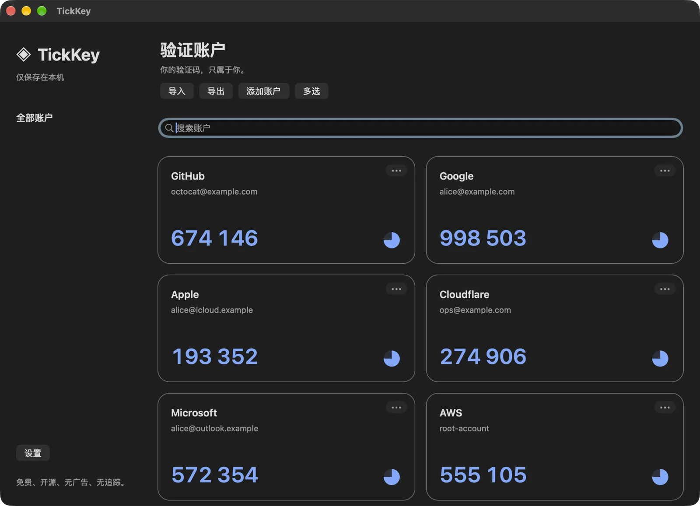
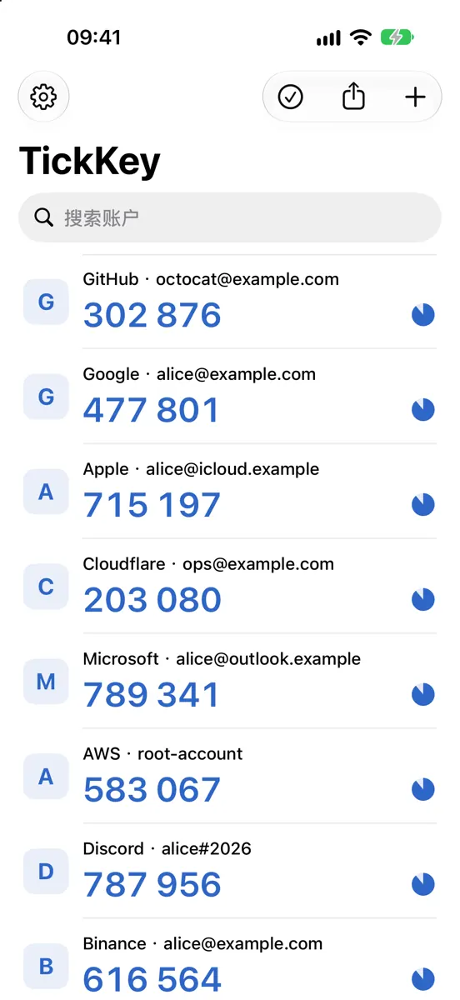

账户卡片
自适应卡片布局，搜索、单击复制、编辑与删除，圆饼倒计时一目了然。
TOTP 两步验证器 · Mac / iPhone / iPad
TickKey 是免费的本地两步验证器。无需注册账户，没有广告、分析 SDK 和服务端；账户密钥加密保存在本机。
示例账户与密钥均为虚构；验证码由本页在浏览器中按 RFC 6238 实时计算。点按卡片可复制。
01
TOTP（RFC 6238）用共享密钥对当前时间片做 HMAC，再截取 6 位数字。网站和 TickKey 各自计算，结果一致即通过验证。
JBSWY3DPEHPK3PXP
添加账户时从二维码或链接读取，加密保存在本机。
—
T = ⌊Unix 时间 ÷ 30⌋，每 30 秒加一。
—
用密钥对 T 计算 20 字节消息认证码。
— — —
取出 31 位整数，对 10⁶ 取模得到 6 位验证码。
TickKey 同样支持 SHA-256 / SHA-512、6–8 位与 1–300 秒周期。正确的系统时钟是验证码正确的前提。
02
验证码生成与账户存储都在本机完成，断网时照常可用。TickKey 没有同步服务，也就没有可以泄露账户的云端。
账户整体加密后存入 SQLite；随机设备密钥保存在 Keychain，不同步到 iCloud。
账户数据库排除系统文件备份。换设备时，主动导出用密码加密的 .tickkey 备份；遗失备份密码无法恢复。
启动、回到前台或锁屏后需通过面容 ID、触控 ID 或设备密码解锁，Mac 按 ⌘L 立即锁定。身份验证由系统完成，应用不保存生物特征或设备密码。
复制的验证码 30 秒后清理。Mac 将其标记为敏感临时内容，遵循约定的剪贴板管理工具不会记录；iOS 禁止验证码经通用剪贴板跨设备传播，失去活动状态时遮挡界面。
TickKey 目前未经过独立安全审计。导出的文本和二维码包含真实密钥，请像密码一样保管。
03
Mac 使用 AppKit，iPhone / iPad 使用 UIKit，两端共用验证码、存储与备份实现。界面支持简体中文、繁体中文与 English，语言和外观可热切换。


04
自适应卡片布局，搜索、单击复制、编辑与删除，圆饼倒计时一目了然。
手机相机扫描 otpauth 与迁移二维码；两端都可从二维码图片、剪贴板链接或截图导入，Mac 可把文件直接拖进窗口。
导入 Google Authenticator 迁移二维码与链接，也能导出分页的迁移二维码。
跨平台的密码加密备份。在访达中双击，或在「文件」、邮件、隔空投送中选择「用 TickKey 打开」即可导入。
逐行导入 otpauth URI 或迁移链接，兼容浏览器 Authenticator 插件导出的文本；可导出 otpauth 文本。
发行方、账户、规范化密钥、算法、位数、周期完全一致才视为重复，不同密钥都会保留。
导出单个账户二维码、全部账户二维码，方便换到其他验证器。
多选、全选与反选；超过 5 项或全选删除时提醒备份，并要求两次确认。
05
免费。Mac 版经 Developer ID 签名和 Apple 公证，安装后通过 Sparkle 获取与本机架构一致的更新。